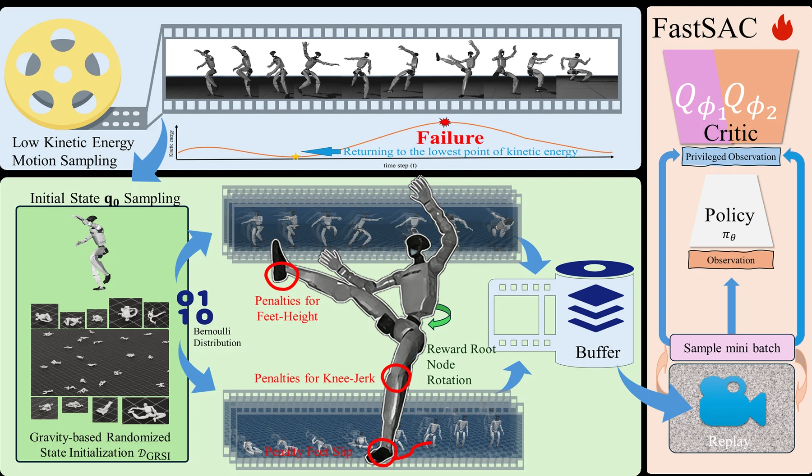

Highly dynamic, balance-challenging martial-arts motion dataset — and a tracking policy that falls, gets up, and keeps going.高动态、考验平衡的武术运动数据集，以及一套跌倒后能自己站起来、接着跳的跟踪策略。
Backflip loops in mjlab, uninterrupted real-robot runs, the open-source walkthrough, and the FastSAC integration — everything we posted while building this. Play it here, or open the collection on Bilibili.mjlab 里的空翻循环、长时间无干扰实机、开源讲解、以及 FastSAC 接入——所有边做边发的片段都在这里。可以直接播放，也可以去 B 站看合集。
Now playingReal robot: tracking + fast fall recovery实机：单策略跟踪 + 快速摔倒恢复
Click a clip to play it in the player above; every card also opens on Bilibili. Player may be blocked in some networks — the direct links always work.
点击列表里的任意视频即可在上方播放，卡片本身也会跳转 B 站。少数网络下播放器可能被限制，直接用链接打开即可。
Real G1 · getting upUnitree G1, no gantry
Hardware
Standard trackingMuJoCo · long fist sequence
Sim
Fall → recover → trackAutonomous, same policy
Recovery
02 Abstract
Humanoid motion tracking can already reproduce routine locomotion and a growing set of highly dynamic skills. What remains fragile is the boundary: when hardware is pushed near its limits, or when the controller loses balance under an unseen disturbance, most pipelines assume the robot never falls. Martial arts sit exactly on that boundary — explosive, high-amplitude, balance-critical, and full of rapid changes of support.
We build a motion dataset from 197 training videos of a national-level wushu athlete, split into 1,726 sub-clips, reconstructed with GVHMR and retargeted with GMR to a 29-DoF Unitree G1. After filtering and manual screening the dataset keeps 992 samples at 50 FPS, partitioned into a Ground set (one foot always in contact) and a Jump set (both feet airborne) — the natural target for fall-recovery research.
On top of the data we propose a training paradigm that explicitly models unsafe states: low-kinetic-energy motion sampling, gravity-based randomized state initialisation, and a recovery objective that turns a fall into a temporary state instead of a terminal one. The result moves humanoid control from “motion tracking” to “recovery-enabled motion execution”.
“A fall is not the end of an episode — it is just another state the policy knows how to leave.”
“摔倒不是回合的结束，它只是策略学会离开的又一个状态。”
Active developmentModel training is ongoing. The Ground subset is largely complete and ready for training; the Jump subset keeps minor imperfections from the video sources.训练仍在进行中。Ground 子集已基本完成，可直接用于训练；Jump 子集受原始视频限制仍有个别瑕疵。Checkpoints · code · data released
01 / DATA
Motion at the limit
逼近极限的武术动作
992 martial-arts clips at 50 FPS, from long fist and southern fist to staff, saber and aerial flips — captured from a real athlete, not studio acting.
An extreme-point correction removes the root-height drift that plagues video-based capture of airborne motion.
用极值点校正消除视频重建在空中动作上常见的根节点高度漂移。
03 / CONTROL
Recovery, not just tracking
不只是跟踪，还要能恢复
Low-energy sampling and randomized initial states teach a policy to get back up — validated on hardware, without a gantry.
低动能采样与随机初始状态让策略学会“重新站起来”——已在实机上验证，无需龙门架。
03 Dataset
From a champion's practice tape to robot-ready motion从冠军的练习录像 到可直接训练的动作
Every clip passes the same pipeline: scene-cut segmentation, monocular motion capture, retargeting to the G1, gravity-based height correction, then human screening.每一段素材都走同一条流水线：场景切分、单目动作捕捉、重定向到 G1、基于重力的高度校正，最后人工筛选。
01 · IN
Video
197 clips practice + competition
02 · CUT
Scene segmentation
1,726 sub-clips auto + manual pass
03 · CAPTURE
GVHMR
SMPL-H params body_pose · betas · transl
04 · RETARGET
GMR
G1 qpos (N, 36) 29 DoF + root
05 · FIX
Height correction
gravity-anchored jump subset only
06 · OUT
KungFuAthlete
992 samples · 50 FPS Ground / Jump
Category composition · samples per discipline
992
samples
Ground822 · 83%
Jump170 · 17%
Click a row to reveal its sub-disciplines. Skill-based motions (flips, air spins, lotus swings) exist only in the Jump subset.
点击任意一行可展开其子类别。技巧类动作（侧空翻、空中转体、旋子）仅出现在 Jump 子集中。
822
KungFuAthlete (Ground)
Non-jumping actions, at least one foot on the ground throughout.
无腾空动作，全程至少一只脚与地面接触。
Continuous ground-based power generation持续的地面发力
Rapid body rotation and stance transitions快速转身与步型转换
Weapon manipulation器械操控
Ready for training已可直接用于训练
550 daily · 99 saber/sword · 93 fist · 80 staff
170
KungFuAthlete (Jump)
Aerial motion where both feet leave the ground — somersaults, cartwheels, air spins.
Metrics averaged over the entire dataset. Long clips (up to 15,792 frames ≈ 5 min) make our data suitable for long-horizon tracking and recovery studies.
指标为全数据集的平均值。最长片段达 15,792 帧（约 5 分钟），适合长时程跟踪与恢复研究。
OBSERVATION 01
Jump sits at the top
Jump 子集全面领先
0.948 m/s and 2.832 rad/s — roughly 5.0× and 5.6× AMASS, and above every dataset in the table.
LAFAN1's mocap locomotion keeps a higher average velocity; our contribution is amplitude and transients, not raw smoothness.
LAFAN1 的平均速度更高。我们的优势在于动作幅度与瞬态变化，而不是平滑度。
05 Height correction
Fixing flight in video-derived motion修正腾空 视频动捕的高度漂移
On jump clips the GVHMR root drifts: the athlete appears to sink or float between contacts. We detect the extreme points of the motion and re-anchor the root height by gravity, then replay the same clip through the retargeting pipeline.在腾空片段中，GVHMR 的根节点会产生漂移：运动员看起来时而陷地、时而悬空。我们检测动作的极值点并依据重力重新锚定根节点高度，再用同一条重定向管线回放对比。
Before · root driftAfter · gravity-anchored
G1 qpos playback of the same clip, before and after the extreme-point height correction.
同一段动作在 G1 上的 qpos 回放：左为校正前，右为极值点高度校正后。
SMPL-H source · clip 278
The untouched GVHMR reconstruction that feeds retargeting.
未经修正的 GVHMR 重建结果，作为重定向的输入。
ALGORITHM
Extreme-point re-anchoring
极值点重新锚定
Contact frames define the floor; airborne apexes are re-projected so that ballistic arcs stay monotone. The corrected qpos keeps the original joint trajectories — only the root height changes.
以触地帧确定地面，重新投影腾空最高点，使抛物线保持单调。校正只改变根节点高度，各关节轨迹保持不变。
adjust_robot_height_by_gravity.py
NoteGround clips need no correction — the algorithm is applied to jump-type qpos only.Ground 片段无需校正，该算法只作用于 Jump 类型的 qpos 数据。
06 Method
Training for the moment it goes wrong为“出错那一刻” 而训练
Instead of assuming a safe state, the sampler deliberately visits low-kinetic-energy states and randomized initial poses — the places from which a fall is about to happen.采样器不再假设“始终安全”，而是刻意进入低动能状态与随机初始位姿——也就是跌倒即将发生的位置。

FIG. 2Overview: low-kinetic-energy motion sampling, gravity-based randomized state initialisation, root/foot penalty shaping, and the FastSAC training loop.方法总览：低动能动作采样、基于重力的随机状态初始化、根节点与足部约束塑形，以及 FastSAC 训练回路。
LKE SAMPLING
Low-kinetic-energy sampling
低动能动作采样
Training episodes are biased toward frames where the motion momentarily slows — the pre-fall states a robot actually needs to recover from.
训练回合更倾向采样动作短暂变慢的帧——这正是机器人真正需要脱困的“跌倒前状态”。
GR STATE INIT
Gravity-based random init
基于重力的随机初始化
Initial states are drawn from a Bernoulli distribution over physically plausible poses, so the policy sees lying, kneeling and half-fallen configurations.
初始状态由物理合理位姿上的伯努利分布采样，使策略见到躺姿、跪姿与半摔倒的构型。
SHAPING
Foot-height, knee-jerk, slip
足高、膝冲击与打滑惩罚
Penalties on foot height, knee-jerk and foot slip keep recovered motion physically plausible instead of a violent snap back to the reference.
对足部高度、膝关节冲击与打滑施加惩罚，让恢复动作物理合理，而不是猛地弹回参考轨迹。
07 Training code
Three stages, one policy三段式训练， 一套策略
Built on Unitree RL MJLab, extended with the recovery modules. PPO is the default backend; FastSAC is an optional off-policy alternative.基于宇树 RL MJLab，扩展了恢复模块。默认使用 PPO，也可切换到 off-policy 的 FastSAC。
unitree_rl_mjlabMuJoCo29-DoF G1
STAGE I
Track & get up
跟踪 + 学会起身
Learn rough tracking and basic fall recovery with adaptive motion sampling across 8,192 environments.
Policy exported to ONNX with the motion file; no gantry, no human intervention.
策略导出为 ONNX，与动作文件一起部署；无需龙门架，也无需人工干预。
1307 Tai Chi on the real G1, hand-held only at initialisation.
1307 太极在真实 G1 上的执行，仅在初始化时有人辅助。
SafetyThe Jump subset is for studying the upper limits of humanoid motion. Training or deploying it on real hardware without strict safety constraints can damage the robot.Jump 子集用于研究人形机器人的运动能力上限。若缺乏严格安全约束就用于真实硬件训练或部署，可能造成硬件损坏。
08 Results
It falls. It gets up. It keeps tracking.会摔，也会站起来， 然后继续跟。
All clips rendered from the released policy: standard tracking, tracking interrupted by falls, and recovery from a lying start.以下片段均由已发布的策略渲染：常规跟踪、跟踪中跌倒后恢复，以及从躺姿开始的起身恢复。
Click any tile to play in full size. Videos load lazily as they enter the viewport.
点击任意缩略图可全屏播放。视频进入视口后才开始加载。
09 Citation & resources
Use it, cite it使用与引用
The dataset is released for research and academic use. Video material is used with permission from the athlete.数据集供科研与学术使用；视频素材已获得运动员本人授权。
@article{lei2026kungfuathletebot,
author = {Zhongxiang Lei and Lulu Cao and Xuyang Wang and Tianyi Qian and Jinyan Liu and Xuesong Li},
title = {A Kung Fu Athlete Bot That Can Do It All Day: Highly Dynamic, Balance-Challenging Martial Arts Motion Dataset and Autonomous Fall-Resilient Tracking},
year = {2026},
eprint = {2602.13656},
archivePrefix = {arXiv},
primaryClass = {cs.RO}
}
The video material behind this dataset comes from the publicly released training and competition demonstrations of Xie Yuanhang — an athlete of the Guangxi Wushu Team, a National-Level Elite Athlete of China, and holder of Chinese Wushu 6th Duan, who placed third in Wushu Taolu at the 10th National Games of the People's Republic of China.
His demonstrations systematically cover the International Wushu competition taolu — Changquan, Nanquan, weapon routines, and Taijiquan including Taijijian. We sincerely thank him for granting permission to use these videos for research and academic purposes only.